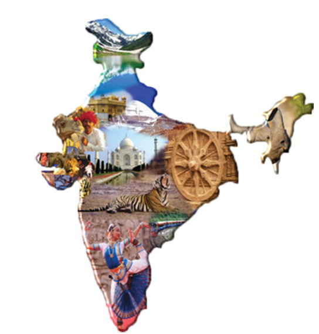
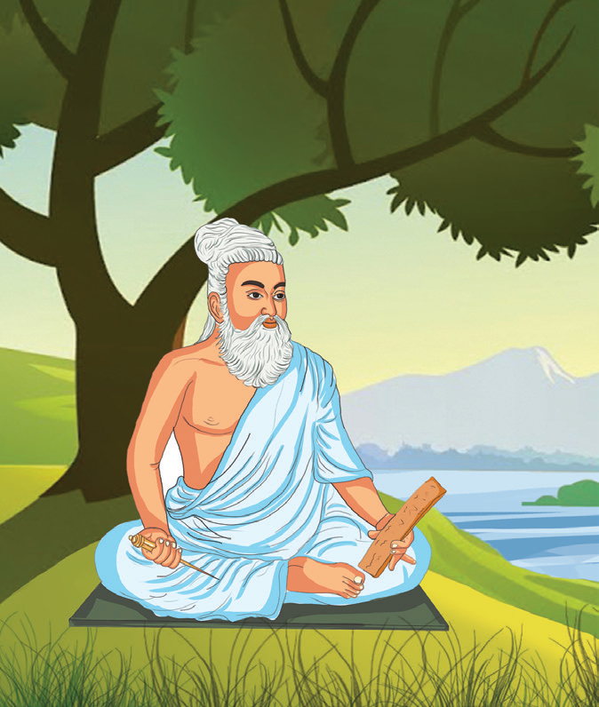
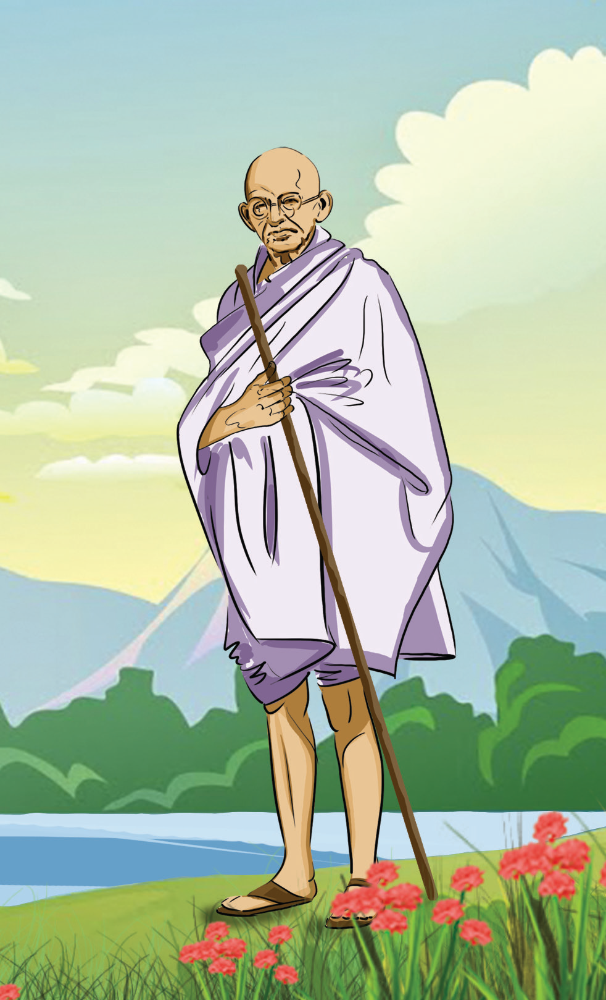
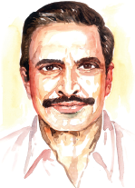

ஆறாம் வகுப்பு மூன்றாம் பருவம் தமிழ்

இந்திய நாட்டின் சிறப்புகளை அறிதல்
வாழ்வில் எளிமையின் சிறப்பை உணர்தல்
சமூக மாற்றத்தில் காந்தியின் பங்கினைத் தெரிந்து கொள்ளுதல்
விடுதலைப் போராட்டத்தில் பெண்களின் பங்கினைஅறிந்து போற்றுதல்
சொற்களின் வகைகளை அறிந்து பயன்படுத்துதல்
நுழையும்முன்
நமது நாடு வளம் பொருந்தியது. இங்கு இயற்கை வளங்கள் மட்டுமன்றி இலக்கிய வளங்களும் மிகுந்துள்ளள்ளன. வேற்றுமையில் ஒற்றுமையைக் கொண்டது நமதுநாடு. இமயம் முதல் குமரி வரை வாழும் இந்தியர்கள் அனைவரும் உணவு, உடை, மொழி, நாகரிகம் ஆகியவற்றால் வேறுபட்டு இருந்தாலும் உணர்வால் ஒன்றுபட்டவர்களே. தேசிய ஒருமைப்பாட்டை போற்றும் பாடலை அறிவோம் வாருங்கள்.


புதுமைகள் செய்த தேசமிது
பூமியின் கிழக்கு வாசலிது
தெய்வ வள்ளுவன் நெய்த குறள்தான்
தேசம் உடுத்திய நூலாடை
மெய்களைப் போற்றிய இந்தியத் தாய்க்கு
மெய்யுணர்வு என்கிற மேலாடை! (புதுமைகள்)
காளிதாசனின் தேனிசைப் பாடல்கள்
காவிரிக் கரையில் எதிரோலிக்க
கம்பனின் அமுதக் கவிதைகளுக்குக்
கங்கை அலைகள் இசையமைக்க (புதுமைகள்)
கன்னிக் குமரியின் கூந்தலுக்காகக்
காஷ்மீர்த் தோட்டம் பூத்தொடுக்கும்!
மேற்கு மலைகள் நதிகளை அனுப்பிக்
கிழக்குக் கரையின் நலம்கேட்கும்! (புதுமைகள்)
(ஸ்டார் குறியீடு) புல்வெளியெல்லாம் பூக்காடாகிப்
புன்னகை செய்த பொற்காலம்
கல்லைக்கூட காவியமாக்கிக்
கட்டி நிறுத்திய கலைக்கூடம் (புதுமைகள்)
அன்னை நாட்டின் அமுத சுரபியில்
அன்னிய நாடுகள் பசிதீர
அண்ணல் காந்தியின் சின்னக் கைத்தடி
அறத்தின் ஊன்று கோலாக
புதுமைகள் செய்த தேசமிது
பூமியின் கிழக்கு வாசலிது
தாராபாரதி
சொல்லும் பொருளும்
மெய் |
உண்மை |
தேசம் |
நாடு |
பாடலின் பொருள்
பூமியின் கிழக்கு வாசலாகத் திகழும் நமது இந்தியநாடு பல புதுமைகளைச் செய்த நாடு. திருக்குறள் நமது நாடு அணிந்திருக்கும் ஆடையாக விளங்குகின்றது. உண்மைகளைப்
போற்றும் இந்தியத் தாய்க்கு மெய்யுணர்வே மேலாடையாக விளங்குகின்றது. காளிதாசர் இயற்றிய இனிமையான பாடல்கள் காவிரிக்கரை எதிரொலிக்கின்றன. கம்பரின் அமுதம் போன்ற கவிதை வரிகளுக்குக் கங்கை ஆற்றின் அலைகள் இசையமைக்கின்றன.
குமரிமுனை ஆகிய கன்னியின் கூந்தலுக்காகக் காஷ்மீரத்து மலர்கள் மாலையாகத் தொடுக்கப்படுகின்றன. மேற்கே தோன்றும் நதிகள் கிழக்கு எல்லை வரை பாய்ந்து நன்மைகளை விளைவிக்கின்றன. புல்வெளிகள் எல்லாம் பூக்கள் மலர்ந்து பொற்காலமாக புன்னகை புரிகின்றன. கல்லில் செதுக்கிய சிற்பங்கள் யாவும் காவியக் கலைக்கூடமாகக் காட்சி தருகின்றன.
அள்ள அள்ளக் குறையாத அமுதசுரபியாக அன்னை பாரத நாடு திகழ்கின்றது. நம் நாடு பிறநாட்டு மக்களின் பசியையும் போக்கி வருகின்றது. அறத்தின் ஊன்றுகோலாக காந்தியடிகளின் அகிம்சை என்னும் சிறிய கைத்தடி விளங்குகின்றது.
நூல் வெளி
தாராபாரதியின் இயற்பெயர் இராதாகிருஷ்ணன். கவிஞாயிறு என்னும் அடைமொழி பெற்றவர். புதிய விடியல்கள், இது எங்கள் கிழக்கு, விரல் நுனி வெளிச்சங்கள் முதலானவை இவர் இயற்றிய நூல்களாகும். இப்பாடல் தாராபாரதியின் கவிதைகள் என்னும் தொகுப்பில் இடம் பெற்றுள்ளது

கற்பவை கற்றபின்
ஒன்று பாரதம் அன்றைய நாற்றங்கால் என்னும் பாடலை இசையோடு பாடுக.
இரணடு நாட்டு முன்னேற்றத்தில் நம் பங்கு என்னும் தலைப்பில் பேசுக.
1. தேசம் உடுத்திய நூலாடைஎனக் கவிஞர் குறிப்பிடும் நூல்
அ) திருவாசகம் ஆ) திருக்குறள்
இ) திரிகடுகம் ஈ) திருப்பாவை
2. காளிதாசனின் தேனிசைப்பாடல்கள் எதிரொலிக்கும் இடம்
அ) காவிரிக்கரை ஆ) வைகைக்கரை இ) கங்கைக்கரை ஈ) யமுனைக்கரை
3. கலைக்கூடமாகக் காட்சி தருவது
அ) சிற்பக்கூடம் ஆ) ஓவியக்கூடம் இ) பள்ளிக்கூடம் ஈ) சிறைக்கூடம்
4. நூலாடைஎன்னும் சொல்லைப் பிரித்து எழுதக் கிடைப்பது
அ) நூல் கூட்டல் ஆடை ஆ) நூலா கூட்டல் ஆடை
இ) நூல் கூட்டல் லாடை ஈ) நூலா கூட்டல் ஆடை
5. எதிர் கூட்டல் ஒலிக்க என்பதைச் சேர்த்து எழுதக் கிடைக்கும் சொல்
அ) எதிரலிக்க ஆ) எதிர்ஒலிக்க இ) எதிரொலிக்க ஈ) எதிர்ரொலிக்க
1. பாரதம் அன்றைய நாற்றங்கால் என்னும் பாடலில் அமைந்துள்ள எதுகைச் சொற்களை எடுத்து எழுதுக.
2. பாரதம் அன்றைய நாற்றங்கால் என்னும் பாடலில் அமைந்துள்ள மோனைச் சொற்களை எடுத்து எழுதுக.
3. பாரதம் அன்றைய நாற்றங்கால் என்னும் பாடலில் அமைந்துள்ள இயைபுச் சொற்களை எடுத்து எழுதுக.
1. தாராபாரதியின் பாடலில் இடம் பெற்றுள்ள கவிஞர்களின் பெயர்களைக் குறிப்பிடுக.
2. இந்தியாவின் மேற்கு, கிழக்கு ஆகிய திசைகளை இணைத்துக் கவிஞர் காட்டும் காட்சியை எழுதுக.
நம் நாட்டின் முன்னேற்றத்திற்கு மாணவர்கள் செய்யவேண்டியவைபற்றிச் சிந்தித்து
எழுதுக.